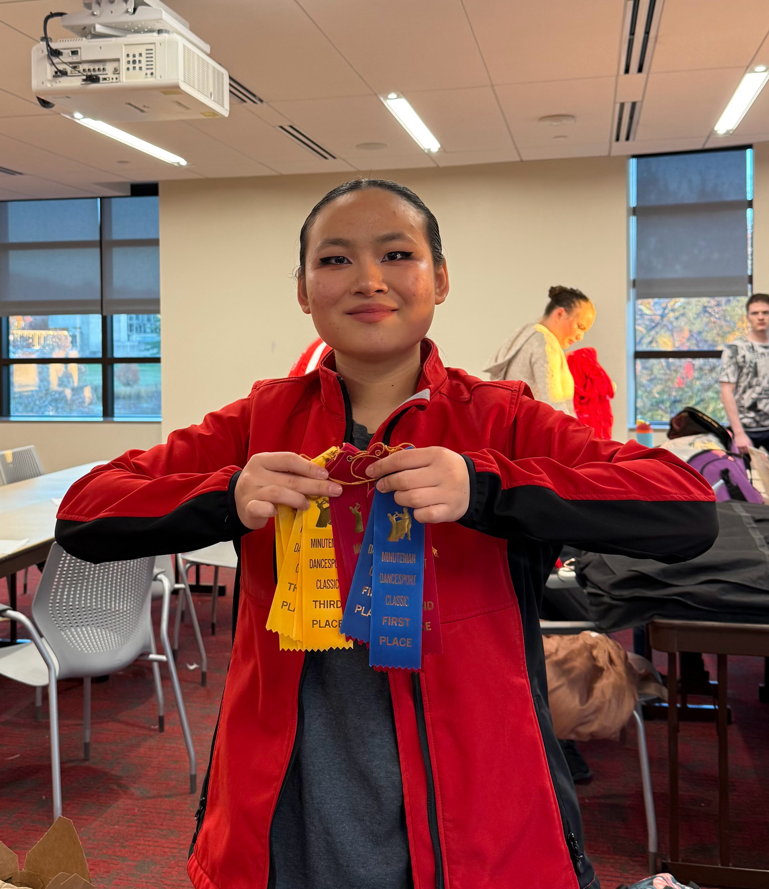

Ballroom Dancing
My journey with ballroom began at age 8 in Latin dance classes. I unfortunately had to pause my training in 2019 due to financial hurdles and the pandemic, but from the moment I first stepped on a dance floor, I knew there was nothing I could love more than ballroom dancing. Therefore, entering college, my first goal was to join the Boston University Dancesport Club. From there, I expanded my knowledge of the ballroom world and later became the Treasurer in 2024 and Team Captain in 2025.
To me, ballroom is one of the most beautiful sports because it perfectly combines art and science. As a close-contact sport, dancers not only have to work with their own biomechanics, but also their partner’s. While carrying out these physical movements, dancers must also execute elements of performance to communicate their passion and, at times, a story. The lessons from ballroom go beyond dance; it has taught me to be confident even when I feel nervous, to communicate both verbally and nonverbally, to manage people, and to organize events.

My Role and Achievements as Team Captain
- Organized and executed collegiate competition, collaborating with ballroom professionals to host 19 colleges/studios and over 300 competitors
- Choreographed original routines for showcases and provided technical training for dancers of various skill levels
- Coordinated with coaches to plan lesson schedules while ensuring material alignment with skill level
- Taught lessons when in need of substitution, delivering technical ballroom lessons to ensure consistent training continuity
- Managed registration for all team members across multiple regional and national competitions
- Created social media content to promote ballroom and club membership
Montage 2025
Montage is the Boston University Dancesport Club’s annual showcase. In 2025, we returned to the big stage of the BU Tsai Performance Center for the first time since COVID. I was heavily involved in the production, choreographing and performing in four distinct pieces, two of which are shown below.
Song: "Merry-Go-Round of Life" by Joe Hisaishi
A Viennese Waltz choreography infused with elements of Tango, illustrating the sharp contrast between light and dark. Much like Yin and Yang, these opposing forces work in tandem to create a striking, beautiful harmony.
Song: "Lo So Che Finirà" by Anna Tatangelo
An international Rumba performance exploring the intense dynamic between two individuals, driven by a continuous cycle of resistance and connection.
Competitions
I compete actively as both a Leader and a Follower in the Latin and Rhythm styles. In recent competitions, I consistently placed within the top three, officially "placing out" of the Silver level. I now compete at the Gold level, the highest rank in syllabus ballroom, where I continue to refine my technical precision and performance quality.
International Cha Cha as a follower with my dance partner Terry at Boston University Terrier Dancesport Competition in Dec 2025, placing first place in Silver level.
American Cha Cha as a leader with my dance partner Khamille at UMass Amherst Minuteman Dancesport Classic in Nov 2025, placing second place in Silver level.

Me and my award ribbons (across all 4 styles of ballroom) at UMass Amherst Minuteman Dancesport Classic in Nov 2025.
Halftime Show
Selected through a competitive audition process, my team performed an original Samba piece for the Boston University Women’s Basketball halftime show. As the choreographer, I designed the routine to fill the stadium stage with high-energy movement and rhythm.
Song: "Light It Up" by Major Lazer
Social Media
I created and managed the official TikTok account for the BU Dancesport Club (@bu.dancesport), where I produced and posted original content, cross-promoting across our Instagram (@budancesport). Since its creation, the account gained over 500 likes, with the top-performing video reaching 1,800 views and 130 likes (shown below).
Sample content from BU Dancesport Club's official TikTok account.